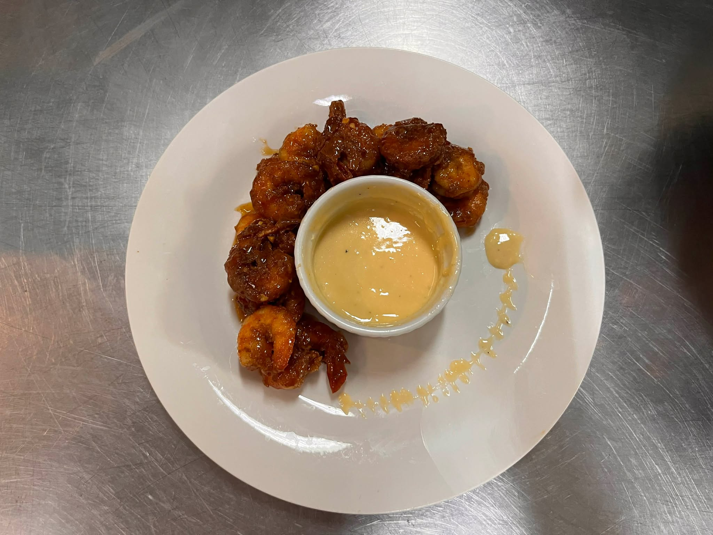
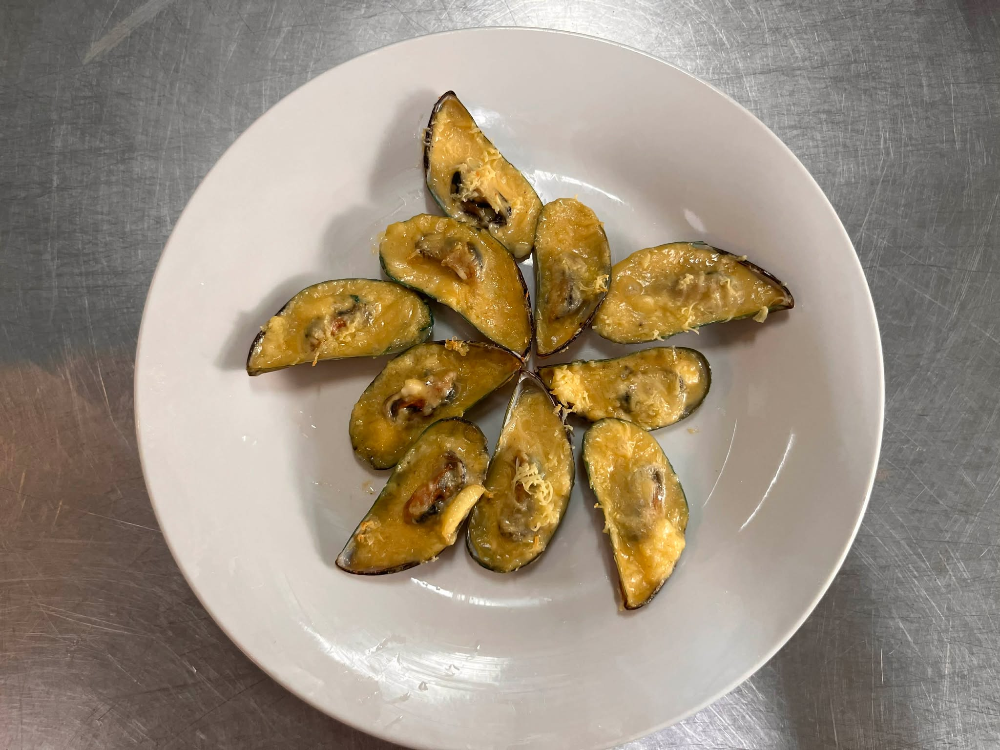
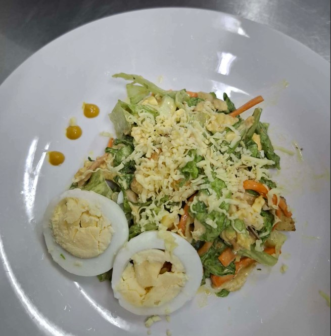

PAPA KHEM'S COOKBOOK
Made with LOVE
Recipe Menu
Honey Garlic Shrimp

Prep time: 30 mins | Cook time: 50 mins | Servings: 2
Ingredients
- 500g shrimp
- 3 tbsp honey
- 2 tbsp soy sauce
- Minced garlic
- Grated ginger
Instructions
- Mix honey, soy sauce, garlic, and ginger.
- Marinate shrimp for 15–30 minutes.
- Sear shrimp 2 minutes per side.
- Pour remaining sauce and cook until thickened. Serve.
Baked Tahong

Prep time: 20 mins | Cook time: 40 mins | Servings: 2
Ingredients
- 1 kilo tahong
- 3–5 cloves garlic
- 1 cup quick melt cheese
- 1 tbsp mayonnaise
Instructions
- Preheat oven to 180°C.
- Clean and steam mussels until open.
- Top with garlic butter and cheese.
- Bake 8–10 minutes.
Caesar Salad

Prep time: 10 mins | Cook time: 30 mins | Servings: 1
Ingredients
- 1/2 cup mayonnaise or olive oil
- 1–2 egg yolks
- 1 tbsp lemon juice
- 1 tsp Worcestershire sauce
- 2 heads romaine lettuce
Instructions
- Prepare dressing.
- Toss lettuce with dressing.
- Add cheese and serve.